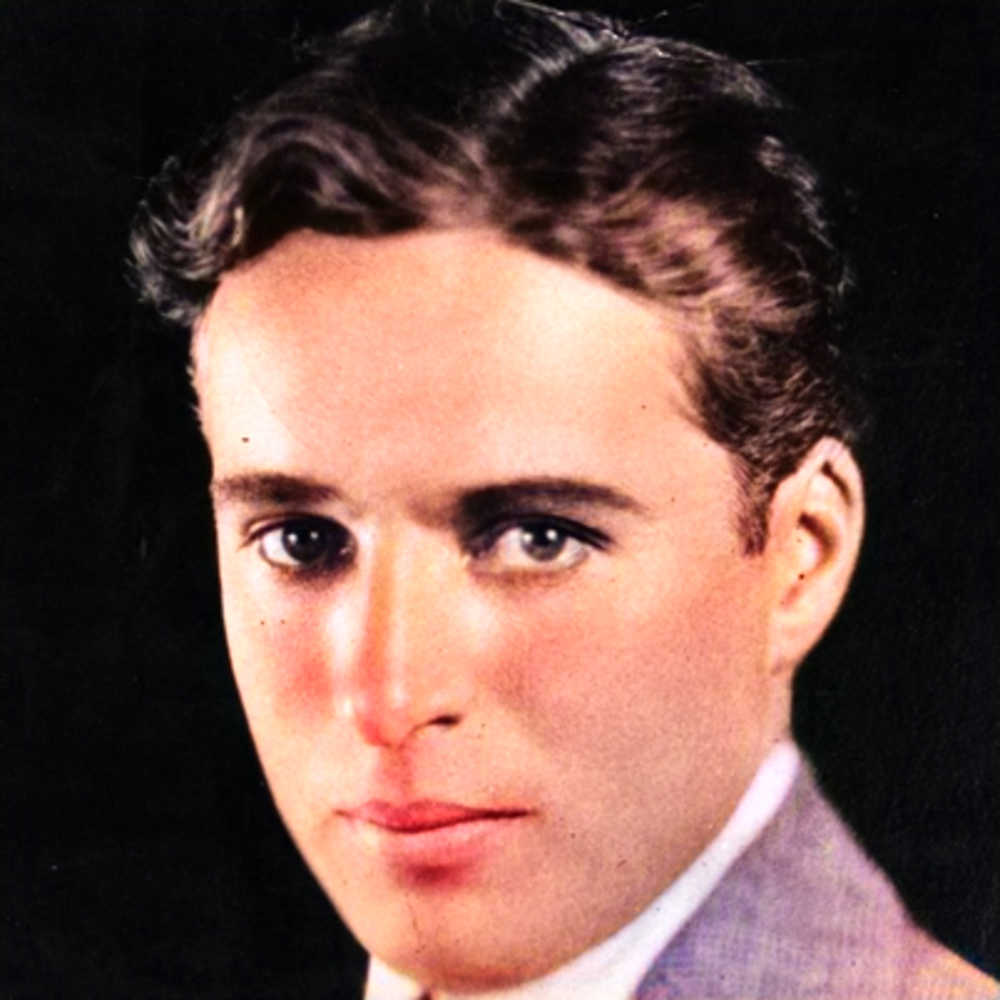
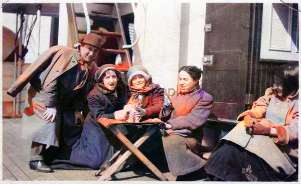
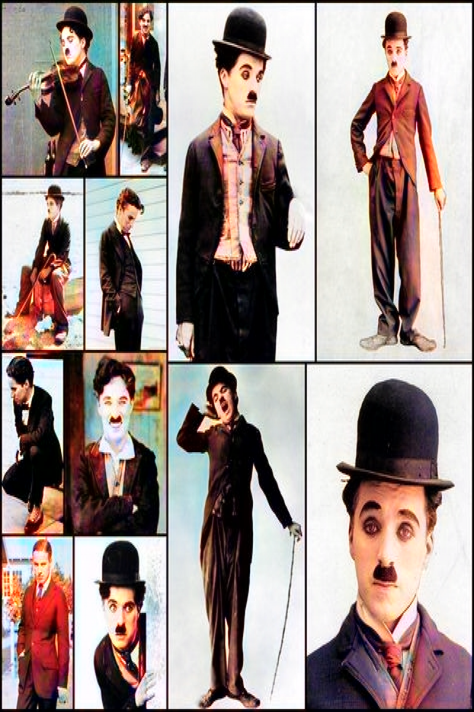
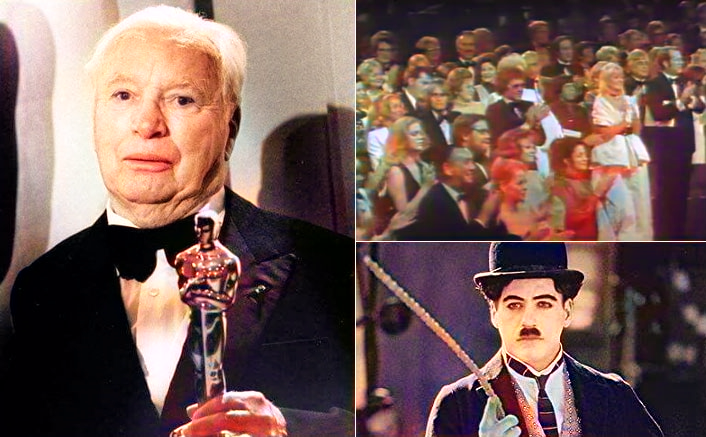

Charles Spencer Chaplin was born in London, England, on April 16th, 1889. His father was a versatile vocalist and actor; and his mother, known under the stage name of Lily Harley, was an attractive actress and singer, who gained a reputation for her work in the light opera field. Charlie was thrown on his own resources before he reached the age of ten as the early death of his father and the subsequent illness of his mother made it necessary for Charlie and his brother, Sydney, to fend for themselves. Having inherited natural talents from their parents, the youngsters took to the stage as the best opportunity for a career. Charlie made his professional debut as a member of a juvenile group called “The Eight Lancashire Lads” and rapidly won popular favour as an outstanding tap dancer.
Career
When he was about twelve, he got his first chance to act in a legitimate stage show, and appeared as “Billy” the page boy, in support of first H. A. Saintsbury and then William Gillette in different productions of “Sherlock Holmes”. At the close of this engagement, Charlie started a career as a comedian in vaudeville, which eventually took him to the United States in 1910 as a featured player with the Fred Karno Repertoire Company.
He scored an immediate hit with American audiences, particularly with his characterization in a sketch entitled “A Night in an English Music Hall”. When the Fred Karno troupe returned to the United States in the fall of 1912 for a repeat tour, Chaplin was offered a motion picture contract. He finally agreed to appear before the cameras at the expiration of his vaudeville commitments in November 1913; and his entrance in the cinema world took place that month when he joined Mack Sennett and the Keystone Film Company. His initial salary was $150 a week, but his overnight success on the screen spurred other producers to start negotiations for his services.
Professions
- Actor
- Film director
- Comedian
- Author
- Film producer
- Director
- Screenwriter
- Film Editor
- Film actor
- Film Score composer

Awards
| Year | Awards |
|---|---|
| 1972, 1929 | Academy Honorary |
| 1973 | Academy award for Best Music |
| 1972 | Golden Lion for lifetime Achievement |
| 1940 | New York Film Critics award for Best Actor |
| 1965 | Erasmus Prize |
| 1976 | Bafta Fellowship |
| 1949 | Bodil Award for Best American Film |
| 1953 | Blue Ribbon Awards for Best foreign Film |
| 1959 | Bodil Honorary Award |
| 1974 | DGA Honorary Life Member Award & Jussi Award for Foreign Filmmaker |
| 1925 | Kinema Junpo Award for Best Film of the year |
| 1961,1953, 1927 | Kinema Junpo Award for Best Foreign Language Film |

Movies


Personal life
He married four times and three of his marriages with Mildred Harris, Lita Grey and Paulette Goddard ended in divorce.
In 1943, he married his fourth wife Oona O'Neill and the couple had eight children together. They remained together until his death.
He died at the age of 88 in his sleep, after he suffered from a stroke. He was laid to rest at the Vevey cemetery, Switzerland.
To honour his achievements, ‘Charlie Chaplin – The Great Londoner’, an exclusive exhibition on his life was opened at the London Film Museum in 2010.